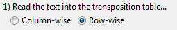
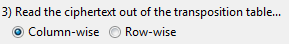
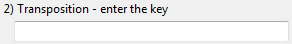

This page is about using the user interface for the transposition cipher. For general information about this algorithm, see: Transposition cipher in the cryptology manual.
Below you will find explanation of what the different "groups" of options shown in the wizard mean, and what to fill in. In the Transposition wizard, you will hardly need all options to change. Just the "Key" and "Transposition" groups are mandatory to take care of in most cases.
This Transposition implementation allows to choose between one-fold and twofold transposition, by checking or unchecking the checkbox at the second key group.
First, choose, whether you want to en- or decrypt the text in this dialog. As this is a symmetric cipher, a text encrypted with a certain key can be decrypted to the original text, using the same key.
The transposition encryption does not naturally operate over an alphabet, like Caesar or Vigenère.
If you would like to change the input text before you apply the algorithm, you can check this box, and you will be able to select from a range of text-altering operations after completing this wizard page. For example, you can choose to delete all blanks for increased security.
Pre-operation text transformation should only be used when encrypting a text. When used with decryption, there will be information loss or unreadable text in most cases.
As mentioned, you can choose between single transposition, and two-fold transposition, where the last one executes two consecutive transposition steps. Each step needs the following input:
Read-in/out-direction:

The transposition encryption puts the text into a so-called "transposition table", which is then transformed by reordering its columns. Now, it has to be entered how the text is put into the table, and how the transposed table will be converted into a text back again. For each, there are two choices: column-wise read-in / read-out and row-wise read-in / read-out. A more detailed description can be found in the transposition-cipher article in the cryptology manual.
Transposition key:

The transposition key can consist of any characters from the alphabet. Longer keys do transpose a text better in the average case.
Important is, that at the decryption of a cipher not only the keys have to be the same ones as at the encryption - the read-in/read-out orders have to match, too. You could assume (legitimately) that read-in and read-out order must be inverse to the orders at the encryption, but this is done automatically for you. Note: Put exactly the same options at decryption as at encryption.
After finishing the wizard, you should be able to see your en- or decrypted text in the newly opened editor.